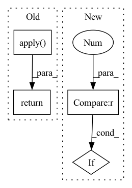

Pattern ID :1626
Before Change
inference_cuda_module.residual_add_bias_fp32
def forward(self, input, residual, residual_norm, bias):
return DeepSpeedMLPFunction.apply( input,
residual,
residual_norm,
bias,
self.inter_w,
self.inter_b,
self.attn_nw,
self.attn_nb,
self.config,
self.mp_group,
self.output_b,
self.output_w,
self.q_scales,
self.q_groups,
self.merge_count,
self.mlp_gemm_func,
self.fused_gemm_gelu,
self.vector_matmul_func,
self.bias_residual_func,
self.residual_add_func)
After Change
add_bias=bias is not None,
residual_add=residual_add)
if self.mp_group is not None and dist.get_world_size(group=self.mp_group) > 1 :
dist.all_reduce(residual, group=self.mp_group)
return residual
In pattern: SUPERPATTERN
Frequency: 3
Non-data size: 4
Instances Fragment ID: 5548572
Project Name: microsoft/deepspeed
Commit Name: c702b64c94243674c3143a4cf29d59777a88307d
Time: 2023-01-09
Author: jerasley@microsoft.com
File Name: deepspeed/ops/transformer/inference/ds_mlp.py
M Class Name: DeepSpeedMLP
N Class Name: DeepSpeedMLP
M Method Name: forward(5)
N Method Name: forward(5)
M Parent Class: nn.Module
N Parent Class: nn.Module
M File Name: deepspeed/ops/transformer/inference/ds_mlp.py
N File Name: deepspeed/ops/transformer/inference/ds_mlp.py
M Start Line: 159
M End Line: 178
N Start Line: 67
N End Line: 94
Before Change
self.blocks = nn.ModuleList([ReversibleBlock(f=f, g=g) for f, g in blocks])
def forward(self, x):
return _ReversibleFunction.apply( x, self.blocks)
After Change
def forward(self, x):
blocks = self.blocks
if self.layer_dropout > 0 :
to_drop = torch.empty(len(self.blocks)).uniform_(0, 1) < self.layer_dropout
blocks = [block for block, drop in zip(self.blocks, to_drop) if not drop]
blocks = self.blocks[:1] if len(blocks) == 0 else blocks
Fragment ID: 5548573
Project Name: lucidrains/reformer-pytorch
Commit Name: f989c1483f6f3d108722cfc1070933b6bee9a274
Time: 2020-02-23
Author: lucidrains@gmail.com
File Name: reformer_pytorch/reversible.py
M Class Name: ReversibleSequence
N Class Name: ReversibleSequence
M Method Name: forward(2)
N Method Name: forward(2)
M Parent Class: nn.Module
N Parent Class: nn.Module
M File Name: reformer_pytorch/reversible.py
N File Name: reformer_pytorch/reversible.py
M Start Line: 118
M End Line: 118
N Start Line: 118
N End Line: 125
Before Change
norm_w=None,
norm_b=None,
alibi=None):
output = DeepSpeedSelfAttentionFunction.apply(
input,
input_mask,
head_mask,
layer_past,
get_present,
encoder_hidden_states,
encoder_attention_mask,
output_attentions,
norm_w,
norm_b,
self.config,
self.attn_qkvw,
self.attn_qkvb,
self.num_attention_heads_per_partition,
self.norm_factor,
self.hidden_size_per_partition,
self.attn_ow,
self.attn_ob,
self.mp_group,
self.q_scales,
self.q_groups,
self.merge_count,
self.qkv_merging,
self.score_context_func,
alibi)
return output
After Change
inp_norm = qkv_out[-1]
if self.config.mlp_after_attn and self.mp_group is not None and dist.get_world_size(
group=self.mp_group) > 1 :
dist.all_reduce(output, group=self.mp_group)
return (output, key_layer, value_layer, context_layer, inp_norm)
Fragment ID: 5548574
Project Name: microsoft/deepspeed
Commit Name: bb68c526ad2c267dfb235db9c0d0fb1413d19a34
Time: 2022-12-22
Author: jerasley@microsoft.com
File Name: deepspeed/ops/transformer/inference/ds_attention.py
M Class Name: DeepSpeedSelfAttention
N Class Name: DeepSpeedSelfAttention
M Method Name: forward(12)
N Method Name: forward(12)
M Parent Class: nn.Module
N Parent Class: nn.Module
M File Name: deepspeed/ops/transformer/inference/ds_attention.py
N File Name: deepspeed/ops/transformer/inference/ds_attention.py
M Start Line: 458
M End Line: 485
N Start Line: 120
N End Line: 151